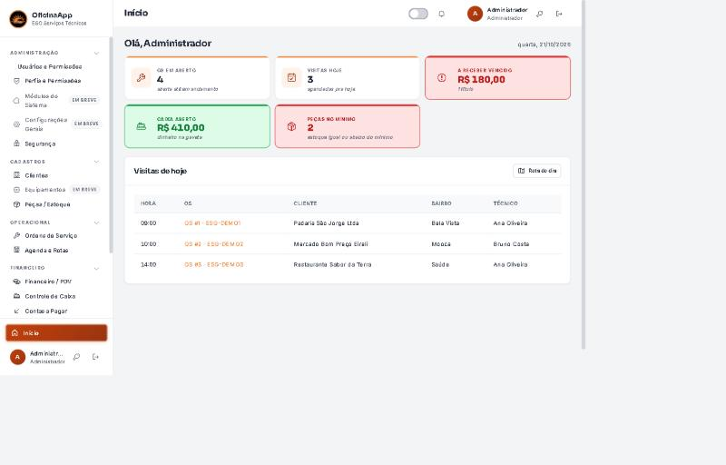
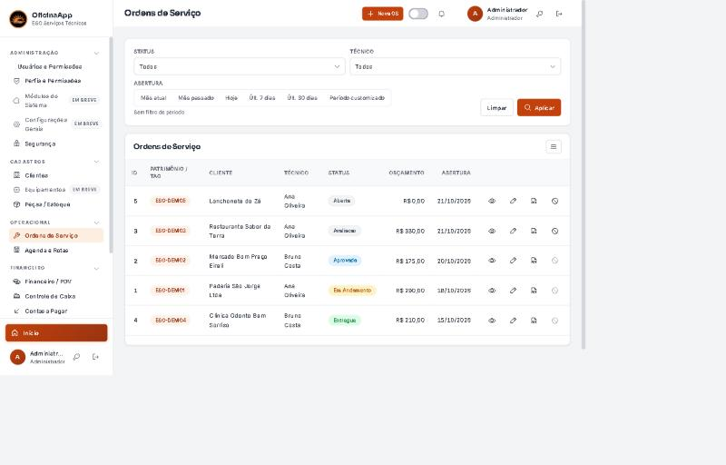
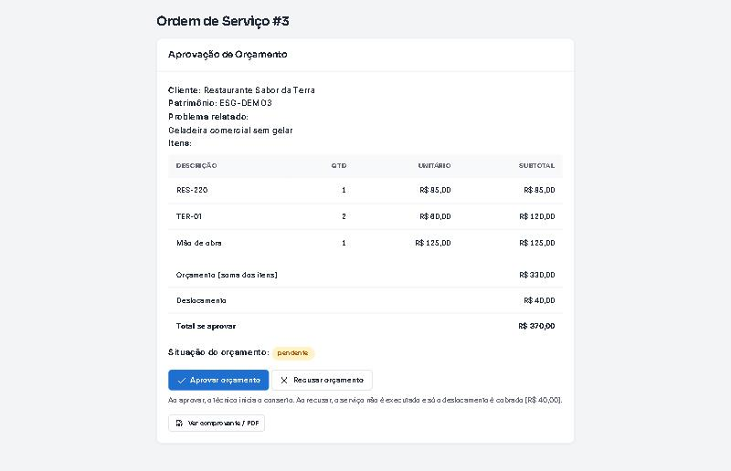
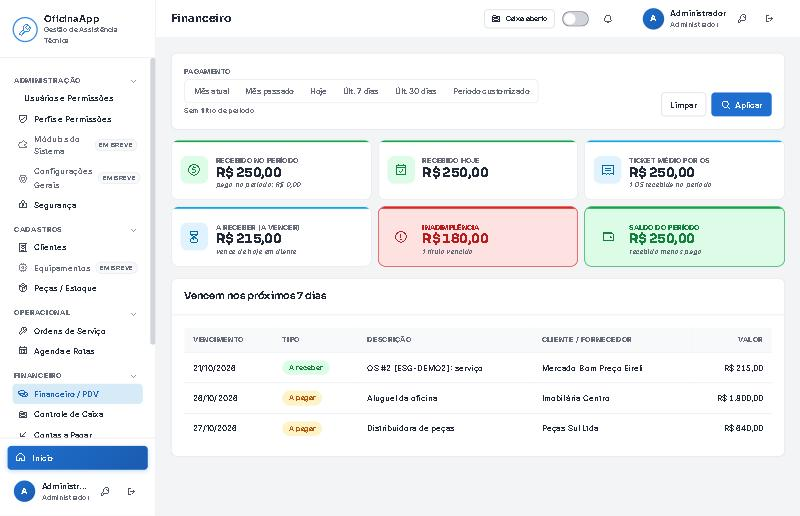
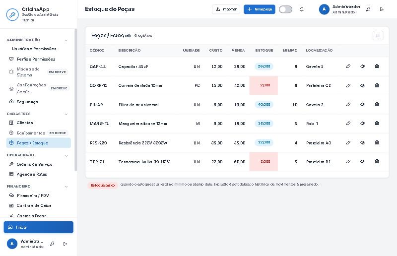
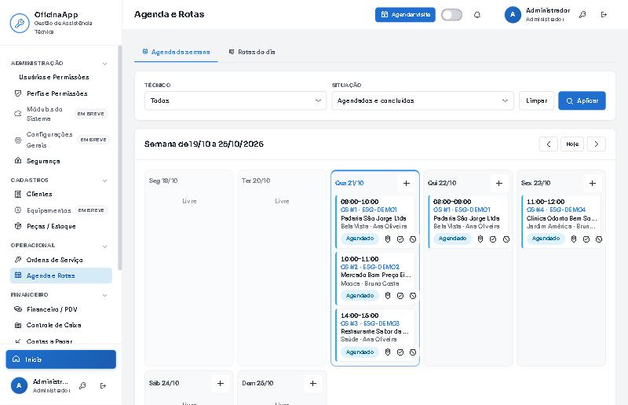
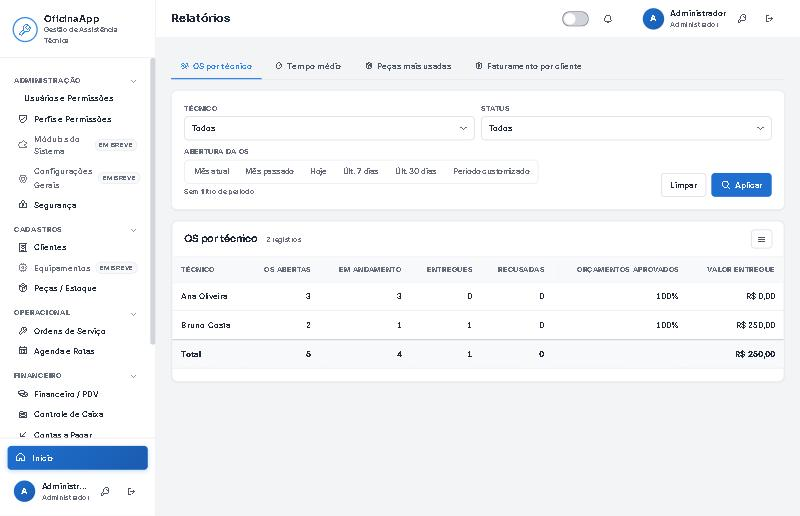
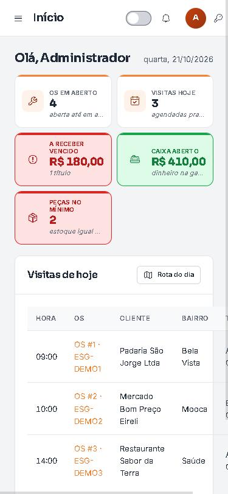

Manual do OficinaApp
Um guia rápido, sem termos técnicos, pra você começar a usar. Em poucos minutos você cria a primeira ordem de serviço e manda pro cliente aprovar.
Como abrir o sistema
Há dois jeitos, e você escolhe o que preferir:
- Testar online: clique em “Testar online” aqui em cima — a demonstração abre no navegador, sem instalar nada.
- Instalar no computador: baixe o pacote na página inicial, dê dois cliques no Instalar.bat e abra pelo atalho que aparece na Área de Trabalho.

Primeiro acesso
Na versão instalada, na primeira vez a janela preta mostra a senha inicial do administrador (o e-mail padrão é admin@oficina.local). Anote essa senha para entrar. Depois, a tela inicial (“Início”) resume o seu dia: ordens em aberto, visitas de hoje, o que há a receber, o caixa e as peças no mínimo.
Cadastrar cliente e equipamento
No menu, em Cadastros → Clientes, você adiciona o cliente (nome, CPF ou CNPJ, endereço). Em cada cliente dá pra cadastrar os equipamentos dele (o aparelho que vai pra manutenção), com modelo, marca e número de série.
Criar uma ordem de serviço
Em Operacional → Ordens de Serviço, clique em “Nova OS”. Você escolhe o cliente e o equipamento, descreve o problema, tira foto do antes, e vai somando as peças e serviços — o orçamento se monta sozinho.

O cliente aprova pelo link
Cada ordem gera um link. Você manda pelo WhatsApp e o cliente abre no celular, vê as peças e o total, e aprova ou recusa — sem senha e sem instalar nada. Na entrega, ele assina na própria tela.
- Recusou? Você cobra só o deslocamento.
- Aprovou e entregou? A peça baixa do estoque e a conta a receber nasce sozinha.

Entrega e financeiro
Em Financeiro / PDV você acompanha contas a pagar e a receber, parcela, dá baixa e emite recibo pra mandar pro cliente. O Controle de Caixa registra entradas, sangria e suprimento do dia.

Estoque de peças
Em Cadastros → Peças / Estoque ficam as peças, com aviso de estoque mínimo (as que estão acabando aparecem destacadas e no painel inicial). Dá pra cadastrar uma a uma ou importar por planilha de Excel (tem um modelo pronto pra baixar).

Agenda e rotas
Em Agenda e Rotas você vê a semana por técnico e a rota do dia agrupada por bairro, com link direto pro mapa — pra não cruzar a cidade à toa.

Relatórios
Em Relatórios você acompanha OS por técnico, tempo médio de atendimento, peças mais usadas e faturamento por cliente — tudo pronto pra exportar.

Usar no celular
O sistema abre no navegador do celular e pode ser instalado como aplicativo na tela inicial (ele avisa quando a internet cai). Ideal pro técnico na rua, com a agenda e as OS na mão.
